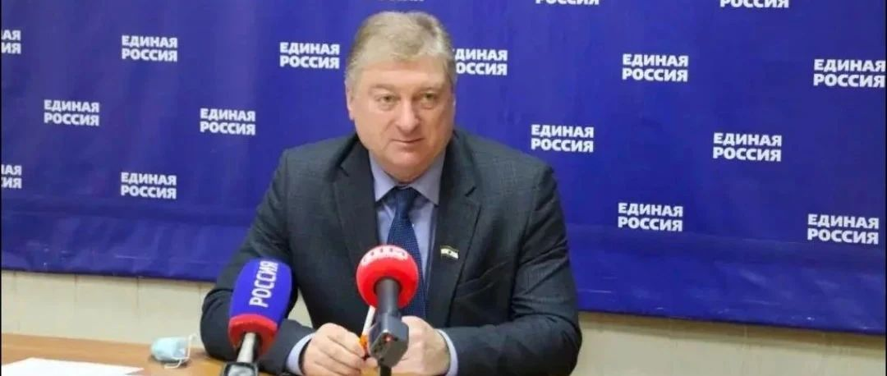

继LGBT与丁克后，俄罗斯又将堕胎归入“恐怖主义”
近年来，俄罗斯有开始重新审视“保护堕胎权”问题的迹象，多个迹象表明俄罗斯政府试图限制堕胎权，声称是为了“提升俄罗斯人口出生率。
早在2023年，俄罗斯议会家庭妇女儿童事务委员会副主席塔季扬娜·布茨卡娅，就建议仅由俄罗斯公立医院实施堕胎，“有必要将堕胎仅限于公立医院，以便在(母亲)决策(堕胎)时关注。”俄罗斯议会副议长安娜·库兹涅佐娃也称：“(俄罗斯)正在决定(是否)立法禁止在私人医院堕胎。”最终该立法计划被俄罗斯总统普京以涉及妇女权益为由喊停。
虽然被暂时喊停，但俄罗斯联邦东正教大牧首基里尔正利用宗教影响力呼吁禁止女性堕胎，“俄罗斯需要更多人口，要做到这点，就必须有人真正致力于增加人口，如果我们成功禁止妇女堕胎，人口统计数据就会立即上升。”
虽然限制堕胎权立法暂停，但俄罗斯多地从2023年开始反对与打击所谓“宣传堕胎”。例如俄罗斯联邦下属的科米共和国，2024年7月通过了《打击“煽动堕胎”法》，引入“煽动堕胎罪”，“煽动怀孕妇女进行人工流产是对家庭、母亲、父亲和儿童的威胁，如果违反禁令，个人将被罚款3000~5000卢布，政府职员将被罚款20000~50000卢布，单位机构将被罚款100000~200000卢布。”科米共和国官员回应称“宣传或煽动堕胎”是仇视儿童，是极端思想。
从2023年开始，此前已有库尔斯克州、普斯科夫州、斯摩棱斯克州、沃洛格达州、加里宁格勒州、特维尔州、诺夫哥罗德州、莫尔多瓦共和国、外贝加尔边疆区等9个州通过类似的反对或限制堕胎权法律。
继将性少数权益运动、丁克主义例入恐怖主义后，俄罗斯正在倾向将“支持墮胎权”定性成新的“极端思想”或“恐怖主义”。
参考资料：白俄罗斯理想社、日新说、美联社、亚太日报